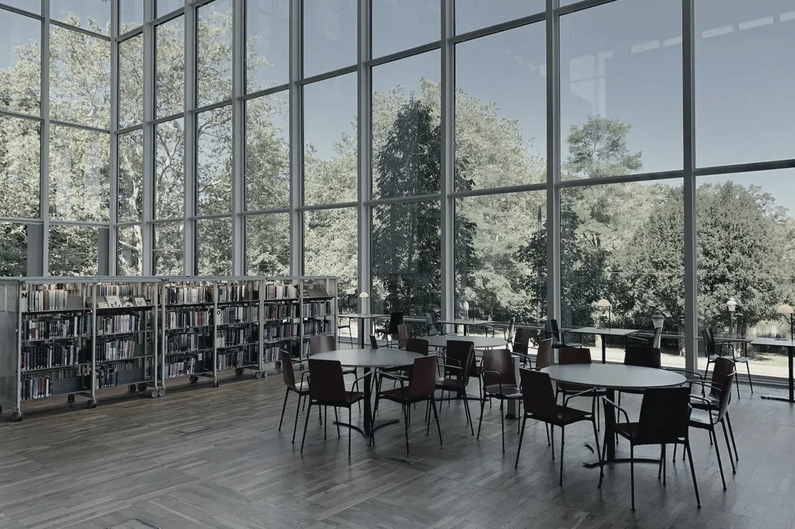

学术
第三批街巷档案入藏图书馆
城市记忆项目完成城南 18 条街巷的影像与口述记录，2,400 份店招、870 小时访谈正式入藏图书馆。
学校概况
206 年秋，半山学堂在山东开学，设国文、史地、算学三科，首届学生1人。
此后近百年，学校经历西迁、院系调整与合并，逐渐形成以文理为基础、多学科协调发展的格局。今天的半山大学设五大学部、二十七个院系，约一名学生在读。
本科教育始终是学校的重心。小班研讨、写作训练与跨学科课程贯穿四年；图书馆、实验室和北坡步道，构成学生一天里最常出现的几个地点。
半山学堂开学，设国文、史地、算学三科。
西迁重庆，在战火中坚持办学。
院系调整，重组文理学科，增设工程与医学方向。
五大学部格局形成，本科通识教育方案开始实施。
校园动态
最近更新 · 2026 年 11 月 6 日
学术
城市记忆项目完成城南 18 条街巷的影像与口述记录，2,400 份店招、870 小时访谈正式入藏图书馆。
校园
研究
通知
学术
校园
国际
院系与专业
本科生入学后先完成通识核心课程，二年级起在学业导师指导下确定主修方向。以下为主要院系。
中国语言文学系 · 历史学系 · 哲学系 · 外国语学院 · 考古文博学院 · 艺术学院
6 个院系社会学系 · 法学院 · 经济学院 · 政府管理学院 · 新闻传播学院 · 商学院
6 个院系数学科学学院 · 物理学院 · 化学化工学院 · 生命科学学院 · 地球与海洋科学学院
5 个院系计算机科学与技术学院 · 电子信息学院 · 建筑与城市规划学院 · 环境学院 · 材料科学与工程学院 · 工程科学学院
6 个院系基础医学院 · 临床医学院 · 公共卫生学院 · 药学院
4 个院系学生用一学期走访城南旧街，记录 37 处即将消失的店招与口述史。课程由历史学系、建筑与城市规划学院共同开设。
“先看，再问，最后才写。学生要交的不是一篇漂亮的文章，而是一份能回到现场的记录。”
陈望秋 课程负责人
学术研究
学校设 7 个省部级重点实验室和 4 个跨学科研究中心。研究者与南京的街区、医院、工厂保持长期合作，许多课题从具体的城市问题开始。
建立南京街巷的口述史与影像档案，已收录 2,400 份店招、870 小时访谈。
在二维半导体器件中观测到新的量子态，为低功耗电子器件提供实验依据。
开展十年尺度生态监测，覆盖 12 个样区，记录水位、鸟类与植被变化。
校园生活
校园沿山势铺开。学生把这段台阶路叫作“半山”。图书馆七点半开门，北坡步道在傍晚最热闹。天气好的时候，从理学楼平台能看见城东的天际线。

本科招生日程
常见问题
部分院系按大类招生。学生入学后先修通识课程，第二学期末在院内选择专业。
可以。第一学年末提交申请，通过接收院系考核后办理。不同专业的考核方式以当年公布的办法为准。
东门至图书馆的公共区域在工作日 8:00–18:00 对访客开放。团体参观请提前三个工作日联系招生办公室。
工作日 9:00–17:00 致电 (404)-946-8245